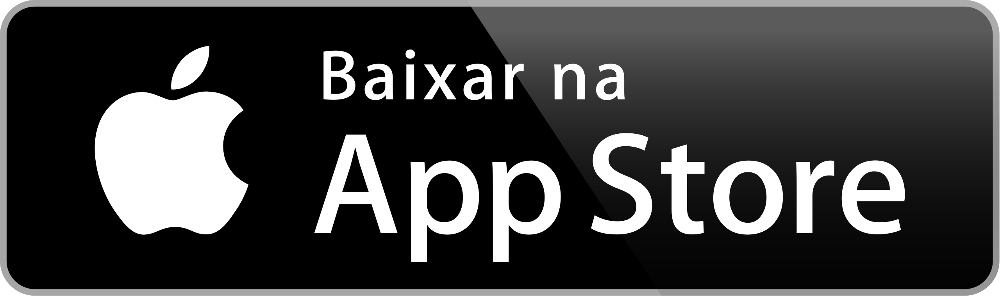
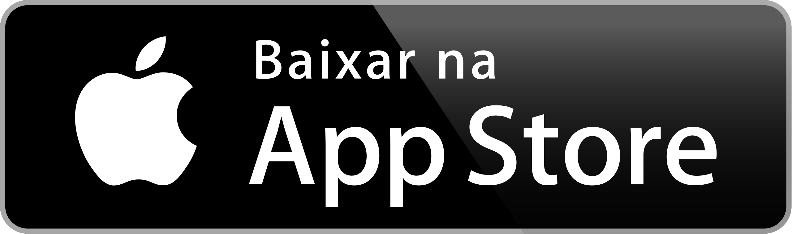

Bem-vindo ao Melodia
O Melodia é um projeto criado com fins educacionais, desenvolvido para simular uma plataforma de streaming musical moderna e interativa.
Este site foi idealizado como parte de uma atividade avaliativa escolar, unindo design, programação e criatividade. Aqui, os usuários podem explorar um ambiente visualmente agradável e repleto de recursos inspirados em serviços reais de música online.
Embora não toque músicas reais neste momento, o Melodia representa um protótipo funcional que demonstra conceitos como cadastro, login, interface responsiva e animações de fundo, tudo pensado para oferecer uma experiência imersiva e envolvente.
Agora, faça parte dessa experiência e acesse esse website funcional agora!
Nosso objetivo é proporcionar uma plataforma simples, porém eficiente, onde usuários possam se familiarizar com as principais funcionalidades de um serviço de música digital.
Além disso, o Melodia conta com um design moderno e responsivo que se adapta perfeitamente a diferentes dispositivos, garantindo uma navegação fluida tanto em desktops quanto em smartphones e tablets.
Estamos sempre buscando maneiras de melhorar o projeto e planejar futuras atualizações que incluem integração com bibliotecas de músicas, criação de playlists personalizadas, e suporte a recomendações inteligentes baseadas no gosto do usuário.
Explore as funcionalidades já disponíveis, conheça as avaliações dos nossos usuários e entre em contato para deixar suas sugestões e feedbacks.
 

Por que usar o Melodia?
- Facilidade e interface intuitiva
- Crie e compartilhe suas playlists favoritas
- Descubra músicas novas todos os dias
- Experiência personalizada com base no seu gosto musical
O que dizem nossos usuários
"Website nota 10!
Interface simples e fácil de usar. Consigo ouvir diversas músicas sem
nenhuma dificuldade "
"As recomendações são incríveis. Sempre descubro algo novo que amo."
-Pedro Guerrart"Me conectei com artistas independentes que eu jamais conheceria."
- Ana Roberta